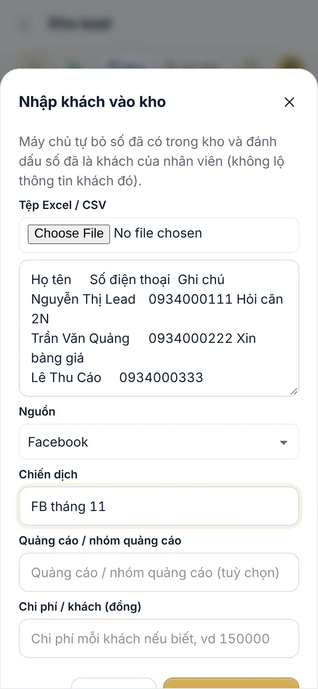
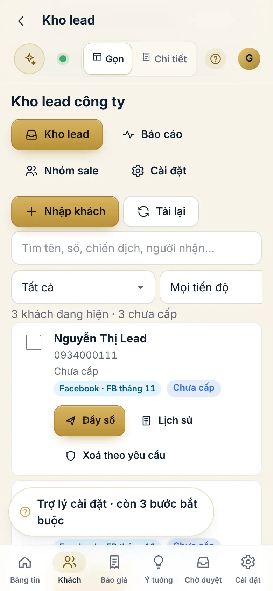
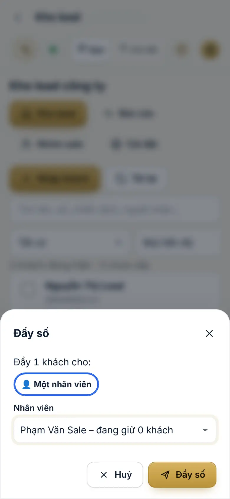
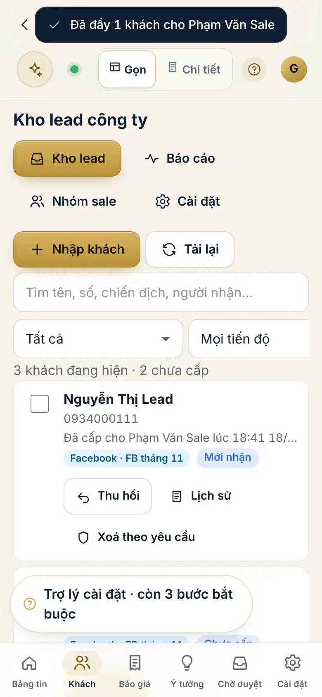

Công ty: Kho lead và Đẩy số
Kho lead gom khách từ quảng cáo về một chỗ, rồi đẩy số (chia) cho nhân viên.
Chỉ bản Công ty. Người thấy: Quản trị, Marketing, hoặc người được tick quyền Kho lead công ty.
Mở: Khách › 📥 Kho lead.
Nhập lead vào kho
- Bấm Nhập khách.
- Chọn tệp Excel/CSV, hoặc dán bảng từ Excel / Google Sheet (có dòng tiêu đề, vd
Họ tên,Số điện thoại). - Chọn Nguồn (Facebook, Google, TikTok, Zalo, Landing, Sự kiện, Khác) hoặc để "Theo cột Nguồn trong tệp".
- Gõ Chiến dịch, Quảng cáo / nhóm quảng cáo, Chi phí / khách nếu biết.
- Tick ô Khách trong danh sách đã đồng ý cho công ty lưu thông tin và liên hệ tư vấn (bắt buộc – app ghi vào Nhật ký đồng ý của từng khách, kèm tên người xác nhận).
- Bấm Nhập vào kho. App báo "Đã nhập … khách · bỏ … số trùng trong kho."

Số đã có trong kho bị bỏ qua. Số đã là khách của nhân viên khác được đánh dấu (không lộ thông tin khách đó).

Đẩy số cho nhân viên
- Ở lead Chưa cấp, bấm Đẩy số.
- Chọn Nhân viên (danh sách ghi mỗi người đang giữ bao nhiêu khách).
- Bấm Đẩy số. App báo "Đã đẩy … khách cho <tên nhân viên>".
Chọn nhiều lead (tick ô bên trái) để đẩy một lần. Hơn 300 lead: app tự chia thành nhiều đợt, giữ màn mở tới khi báo xong. Thu hồi mỗi lần tối đa 30 lead.

Lead đã cấp ghi "Đã cấp cho … lúc …" cùng tiến độ. Muốn lấy lại: bấm Thu hồi. Xem các lần cấp/đổi: Lịch sử.

Lọc nhanh: Chưa cấp, Đã cấp, ⏰ Quá giờ chưa gọi, theo tiến độ, mức độ, nguồn, chiến dịch.
Thẻ Báo cáo: lead theo nguồn, theo nhân viên. Thẻ Nhóm sale: gom người để đẩy số cho cả nhóm.
Tiếp: Trạng thái lead
Đẩy số qua trưởng nhóm (từ 21/11)
- Ở thẻ Nhóm sale, Quản trị tạo nhóm, chọn trưởng nhóm và sale. Thứ tự nhóm theo số/tên (Nhóm 1, Nhóm 2, … Nhóm 10).
Trưởng nhóm tự Thêm sale (sale chưa thuộc nhóm nào) hoặc bấm × để bỏ sale khỏi nhóm; Quản trị xem ai thêm/bớt ai trong Nhật ký. - Đẩy số → 👥 Nhóm sale → 👑 Qua trưởng nhóm. Trưởng nhóm nhận tin Telegram, mở Kho lead, bấm Đã nhận trong 15 phút
(Quản trị đổi ở Cài đặt › Nhận số và báo cáo). Quá giờ, số tự chuyển sang nhóm kế; không nhóm nào nhận thì số về kho và báo Quản trị. - Trưởng nhóm chọn sale cho từng số rồi bấm Giao. Hoặc bật 🔁 Tự giao lần lượt / ⚖️ Tự giao người ít số nhất để số tới sale ngay.
- Sale gọi khách rồi bấm Đã gọi và chọn kết quả cuộc gọi đầu, cũng trong 15 phút. Quá giờ số về lại nhóm (hoặc tự giao người kế),
trưởng nhóm cũng tự Thu hồi để giao người khác. - Đồng hồ chỉ chạy trong giờ làm (mặc định 8h–21h). Mọi việc trên chạy trên máy chủ, không cần ai mở app; trễ tối đa khoảng 5 phút.
Quản trị cũng đẩy số từ Khách hàng của mình: bấm Chia khách, chọn khách, Đẩy số. Khách phải có Nguồn (bắt buộc khi Quản trị thêm hoặc nhập khách);
nguồn và chi tiết nguồn đi theo số qua mọi lần chuyển để tính chi phí quảng cáo.
Báo cáo mỗi ngày
- Sale bấm Báo cáo trên từng số công ty: ✅ Đang chăm (tiến độ, mức độ, ghi chú) hoặc 🧊 Không quan tâm (trả số về kho) – bắt buộc chọn lý do
(Sai số, Không đủ tài chính, Đã mua chỗ khác, Gọi 3 lần không nghe, Khác) và xác nhận trước khi trả. - Số Đang chăm được hỏi lại sau 3 ngày (Quản trị đổi được); tick Không hỏi lại số này thì thôi hỏi. 17h app nhắc qua Telegram sale còn số chưa báo cáo,
trưởng nhóm và Quản trị nhận tóm tắt. - Số Không quan tâm về Quản trị (lọc 🧊 Không quan tâm ở Kho lead), giữ nguồn và chiến dịch; Quản trị Đẩy lại khi cần.
- Ở Kho lead dòng được tô màu: xanh = Đang chăm, xám = Không quan tâm, vàng = Chờ nhận / chờ gọi. Báo cáo có tỉ lệ Không quan tâm theo nguồn và theo sale.
- Cài đặt › Nhận số và báo cáo có thêm: tối đa số đang giữ mỗi sale (0 = không giới hạn).